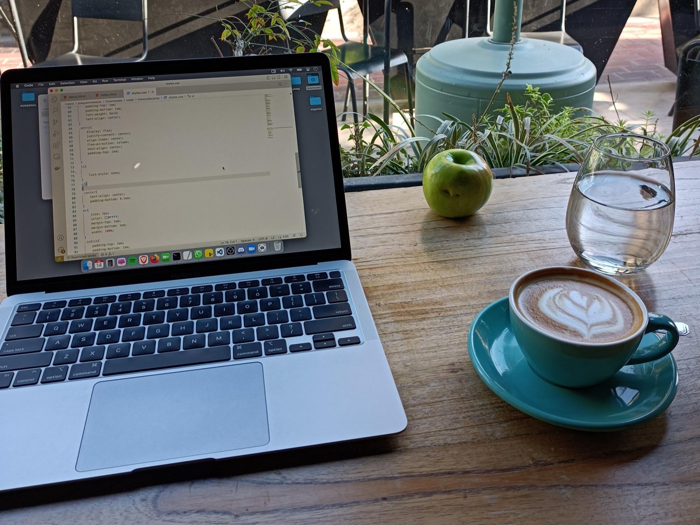

Ruta de estudio desarrollador Fullstack y Web3
Ser desarrollador involucra tener ciertas aptitudes, como las pueden ser el saber sobre los lenguajes básicos como HTML y CSS3.
PPero ahora, y si quiero ser desarrollador fulltstack e ir hacia la web3, ¿cómo sería mi ruta de aprendizaje y estudio que debo seguir?
Bien! Esa fue la pregunta que me hice cuando me inicie en esto, investigando y preguntando diseñe mi propia ruta
En este video te explico como y porque cree esta ruta de estudio la cual voy a seguir a partir de ahora, veremos a dónde nos lleva!

Haz click sobre la imagen para ver y descargar.

01-08-2022